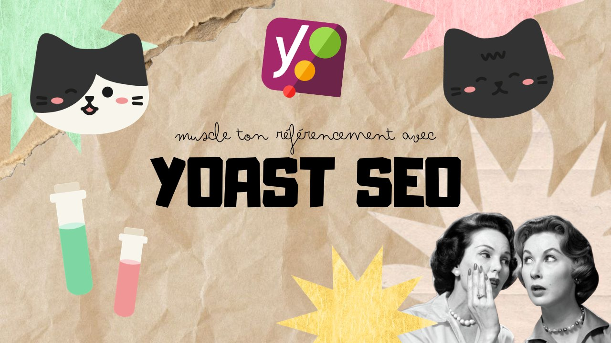
Le screencast vidéo
Capture d'écran commentée : on suit la manipulation en direct, pas à pas.
La suggestion du chef
Apprendre le digital et la com' graphique en s'amusant
Des tutos clairs, des cartes à collectionner, et zéro prise de tête. Une plateforme pédagogique pensée de bout en bout : identité de marque, UX/UI, mascotte illustrée et stratégie de contenu.
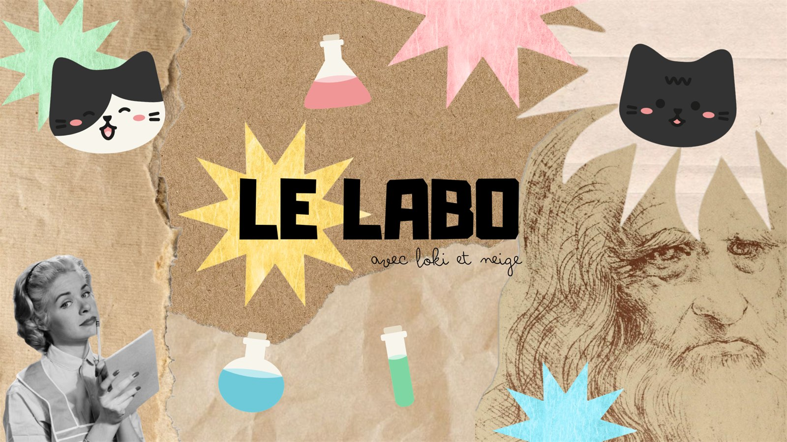
Le brief
Créer cinq tutoriels sur un thème lié à ma spécialisation, déclinés sous trois formats différents, puis concevoir un site pour les regrouper et les partager. Tout ce qui suit découle de cette contrainte.

Capture d'écran commentée : on suit la manipulation en direct, pas à pas.
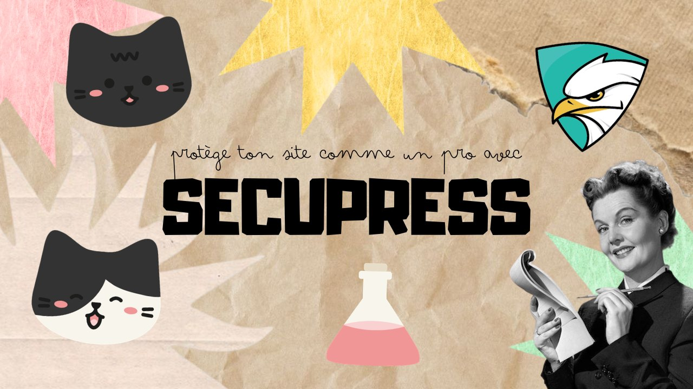
Les notions abstraites deviennent visuelles et se mémorisent plus vite.
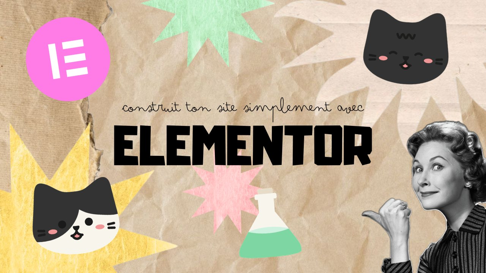
Texte et images à la manière d'OpenClassrooms, pour lire à son rythme.
Les tutos
Chaque notion est traitée dans le format qui lui convient : un module illustré pour ce qui se lit à son rythme, une capture d'écran commentée pour ce qui se montre, une animation pour ce qui s'explique.
Le module illustré
La méthode : on avance point par point, chaque étape appuyée d'une capture d'écran commentée, pour qu'on puisse suivre en faisant. Loki et Neige interviennent en cours de route, le temps de souligner un piège ou de glisser une astuce. C'est ce qui rend la lecture ludique sans lui retirer sa rigueur pédagogique.
Ouvrir le tutoriel

Le screencast et le motion design
Le screencast filme la manipulation en direct, le motion design met en images ce qui n'existe qu'en théorie. Montage sur CapCut, animation sur After Effects. Loki et Neige prêtent leur voix off : ce sont eux qui expliquent, ce qui garde le ton léger même sur les notions techniques. Tout est sous-titré, et le vocabulaire reste volontairement simple, sans trop de jargon.

Le plugin qui t'aide à être plus visible sur Google, sans te prendre la tête. On suit la manipulation en direct, pas à pas. Quinze minutes.
Les essentiels pour sécuriser ton WordPress. Les notions abstraites deviennent visuelles et se mémorisent plus vite. Dix minutes.
Parce qu'un bug arrive vite, et qu'une sauvegarde, ça sauve tout. Migrer ou restaurer tout son site en quelques clics. Huit minutes.
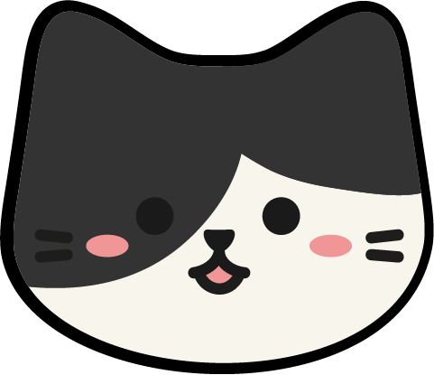
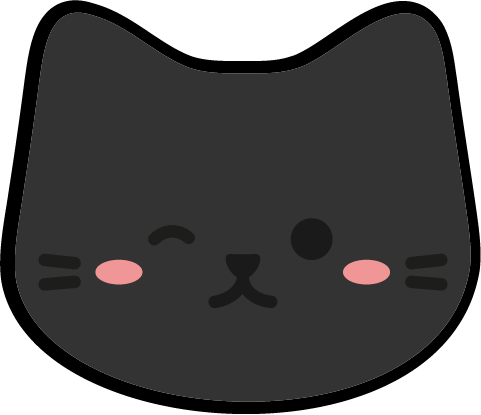
Le concept
Apprendre le digital fait peur. Mon parti pris : retirer la pression et remettre du plaisir. Une mascotte attachante accompagne l'apprenant, chaque module réussi déverrouille une carte à collectionner, et la progression se fait sans jugement ni compte à rebours. On comprend, on pratique, on mémorise.
Loki et Neige accompagnent l'apprenant du premier tuto au dernier quiz.
70 % de réussite au quiz déverrouille une carte du jeu des 7 familles.
Aucun classement, aucun chrono : on avance à son rythme.
Les avatars
Chaque apprenant compose son compagnon : couleur du pelage, taches, regard et humeur. Essayez ici, sans compte ni inscription.
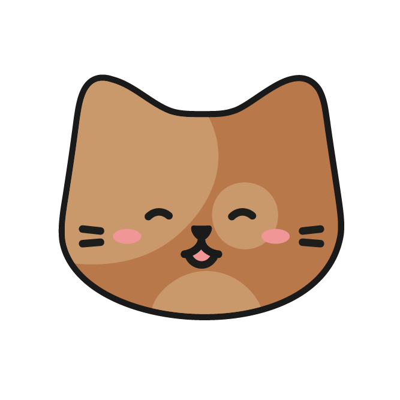
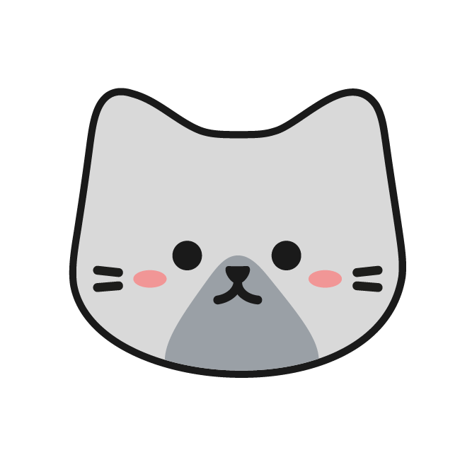
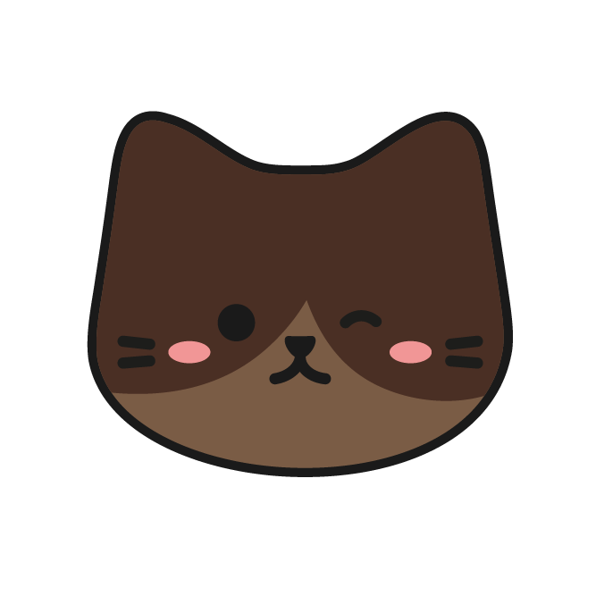
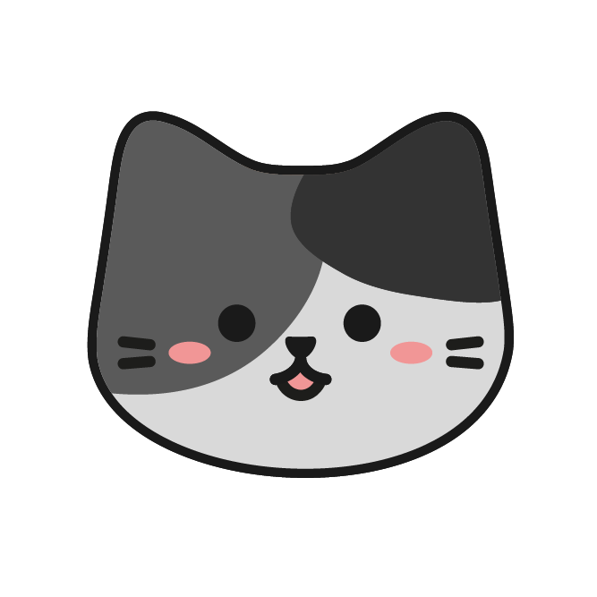
Couleur de
La conception
Le résultat final ne sort pas de nulle part. Voici la direction posée avant la première maquette.

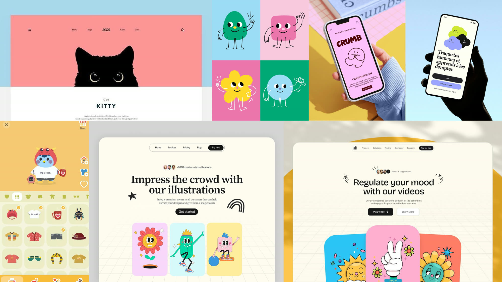
La direction artistique
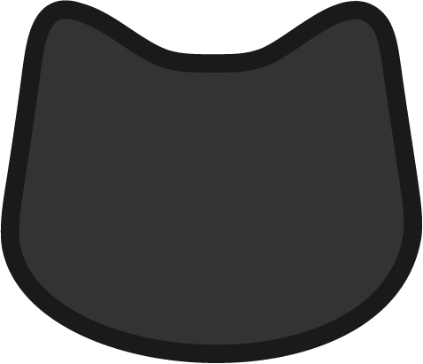
Une base crème douce, relevée de pastels : chaleureux, jeune et non intimidant.
Anton
Titrage : affirmé et gras
Nunito
Courante : ronde et lisible
Bimbo
Manuscrite : la touche spontanée
La maquette
La maquette complète, directement dans la page : cliquez dans l'aperçu pour circuler d'un écran à l'autre, comme sur le site réel.

La collection
Sur le principe du jeu des 7 familles : chaque module terminé avec au moins 70 % de réussite déverrouille une carte représentant un concept, un outil ou une notion. Voici la famille Wordpress au complet.
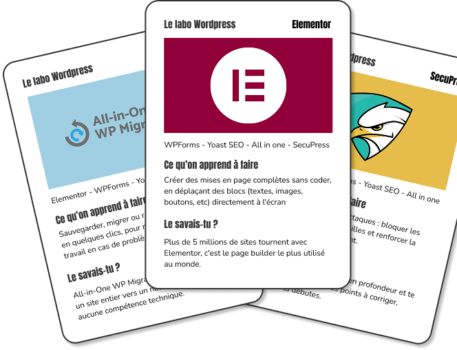
WPForms - Yoast SEO - All in one - SecuPress
Créer des mises en page complètes sans coder, en déplaçant des blocs.
Plus de 5 millions de sites tournent avec Elementor, le page builder le plus utilisé.
Elementor - WPForms - Yoast SEO - SecuPress
Sauvegarder, migrer ou restaurer tout son site en quelques clics.
All-in-One WP Migration déplace un site entier vers un nouvel hébergeur.
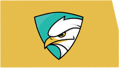
Elementor - WPForms - Yoast SEO - All in one
Protéger son site des attaques : bloquer les intrusions, repérer les failles.
SecuPress scanne ton site en profondeur et te livre un rapport clair.
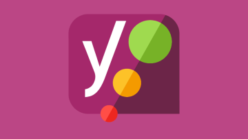
Elementor - WPForms - All in one - SecuPress
Optimiser ton contenu pour Google, sans connaissances techniques.
Yoast SEO est installé sur plus de 13 millions de sites.
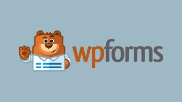
Elementor - Yoast SEO - All in one - SecuPress
Créer des formulaires de contact simples et faciles à remplir.
WPForms équipe plus de 6 millions de sites WordPress.
La déclinaison
Une identité ne tient la route que si elle survit hors de son site. Instagram a été retenu pour toucher des débutants là où ils sont déjà, avec des formats courts qui dédramatisent le jargon : carrousels pédagogiques, reel interactif et stories d'annonce.
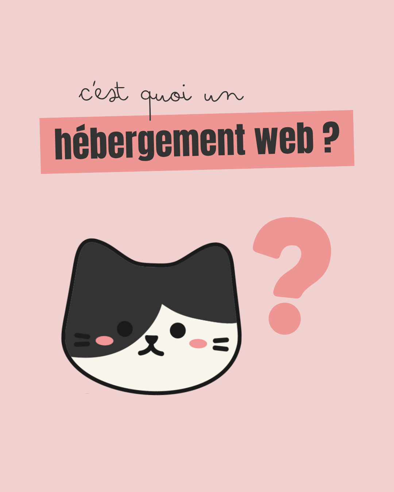
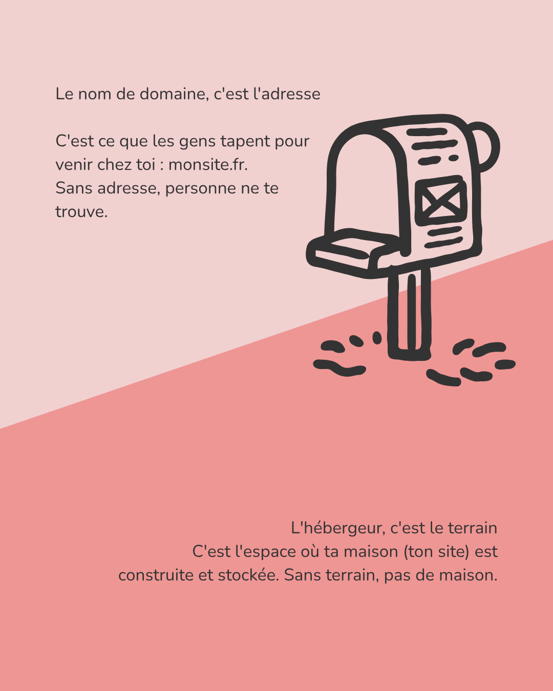
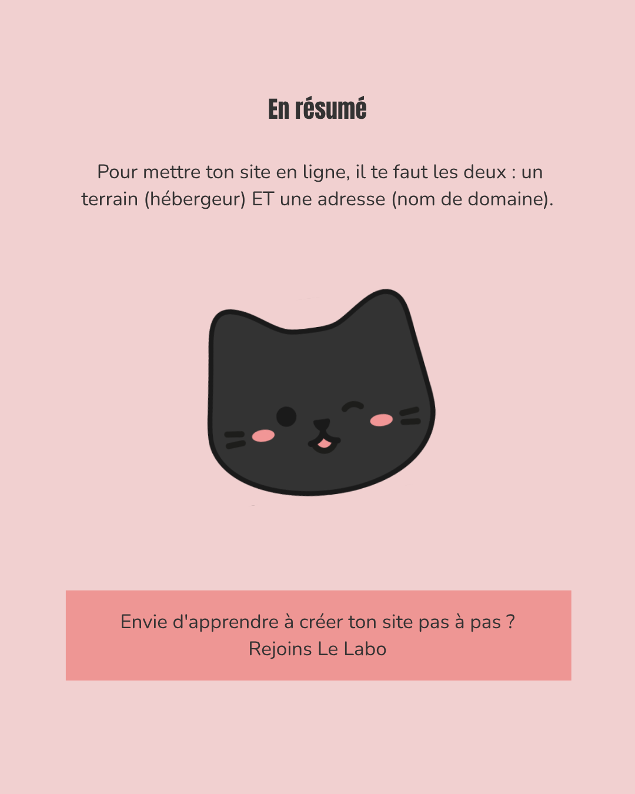
Hébergeur, nom de domaine… ces mots te font peur ? On t'explique tout avec une simple maison. Swipe pour devenir incollable !
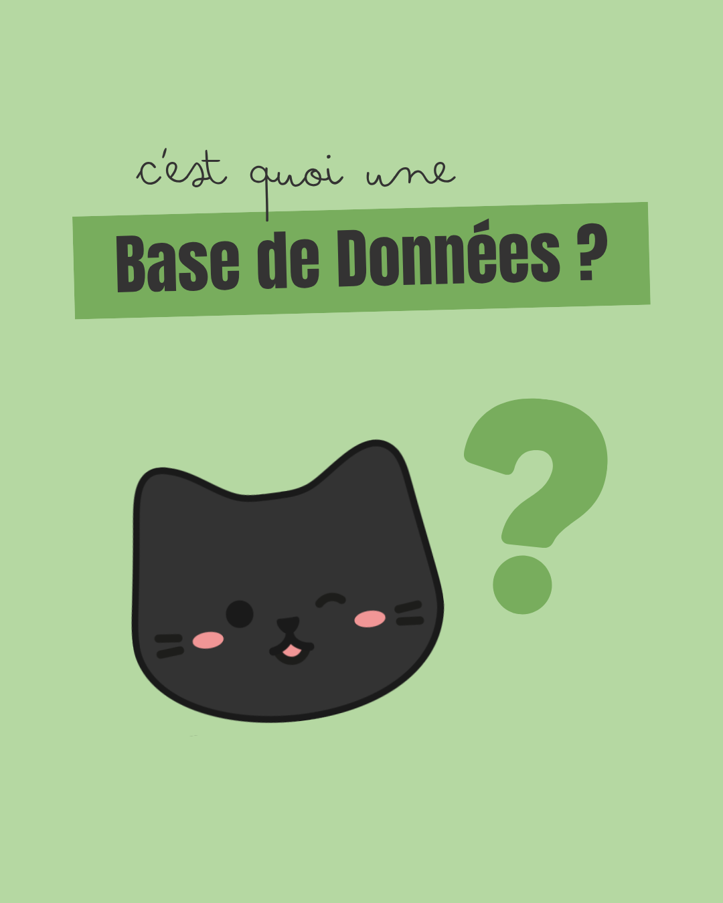
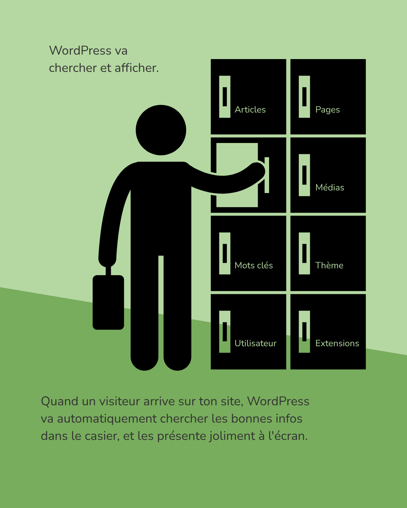
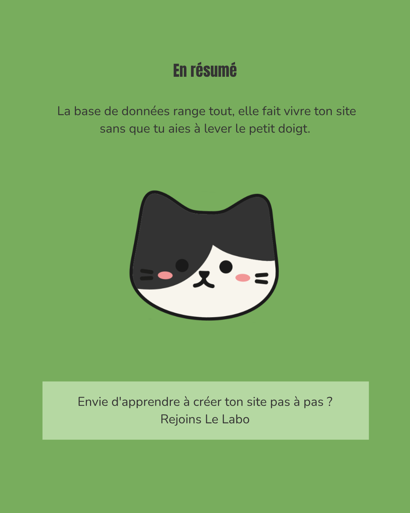
Base de données… ça sonne compliqué ? On t'explique avec un simple casier à dossiers et un secrétaire un peu spécial. Swipe !
Fais une capture d'écran au hasard pour découvrir ton alter ego félin ! Partage ta capture en story et tague-nous pour qu'on voie ton résultat.
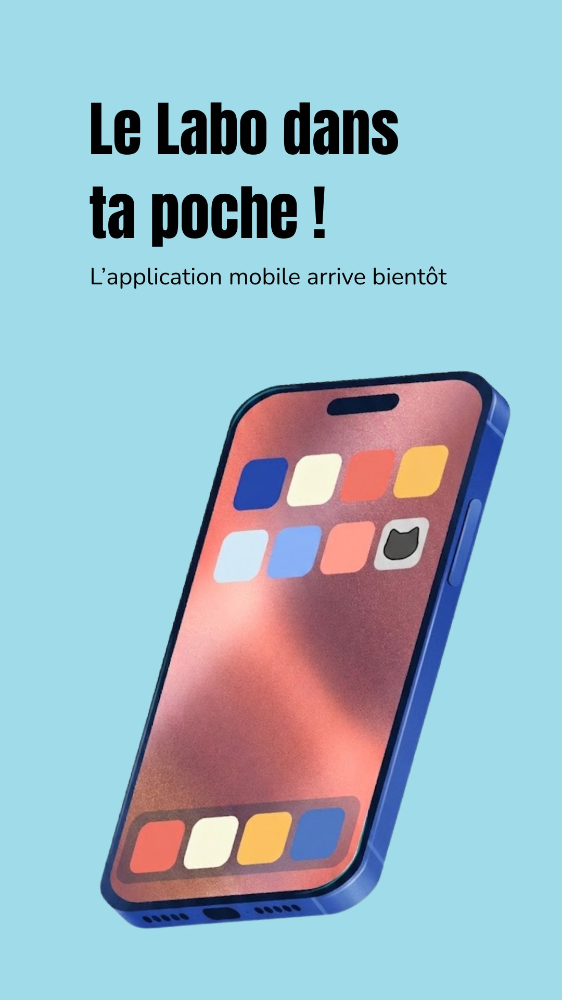
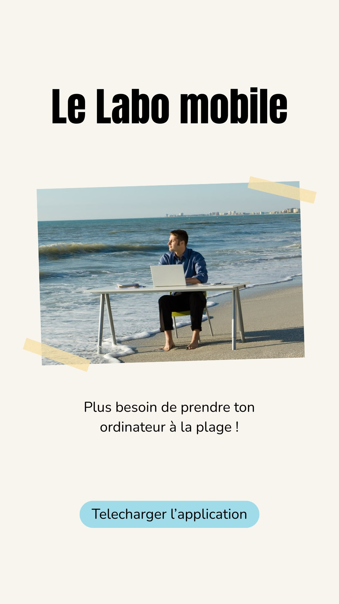
Le site
L'architecture répond au cahier des charges technique : un espace ouvert à tous, un espace personnel pour suivre sa progression, et une administration sécurisée.

01
Ouvert à tous : la présentation des labos, les articles récents et les trois étapes : comprendre, pratiquer, mémoriser.
02
Le tableau de bord : progression dans les modules, score moyen aux quiz, collection de cartes et avatar personnalisé.
03
Accès sécurisé pour créer et modifier les tutoriels, les quiz et les cartes sans toucher au code.
Le mot de la fin
Sur Le Labo, il a fallu jongler entre deux choses qui tirent dans des sens opposés : un cahier des charges technique assez carré d'un côté, et de l'autre toute la liberté d'inventer un univers. C'est ce projet qui m'a appris à trancher et à m'y tenir. Une mascotte, une promesse, un ton, et ensuite tout décliner autour sans jamais perdre le fil. Si je devais continuer, je le confronterais à de vrais débutants pour voir ce qui accroche vraiment, et je le ferais évoluer avec ce qu'ils me renvoient.
Projet suivant
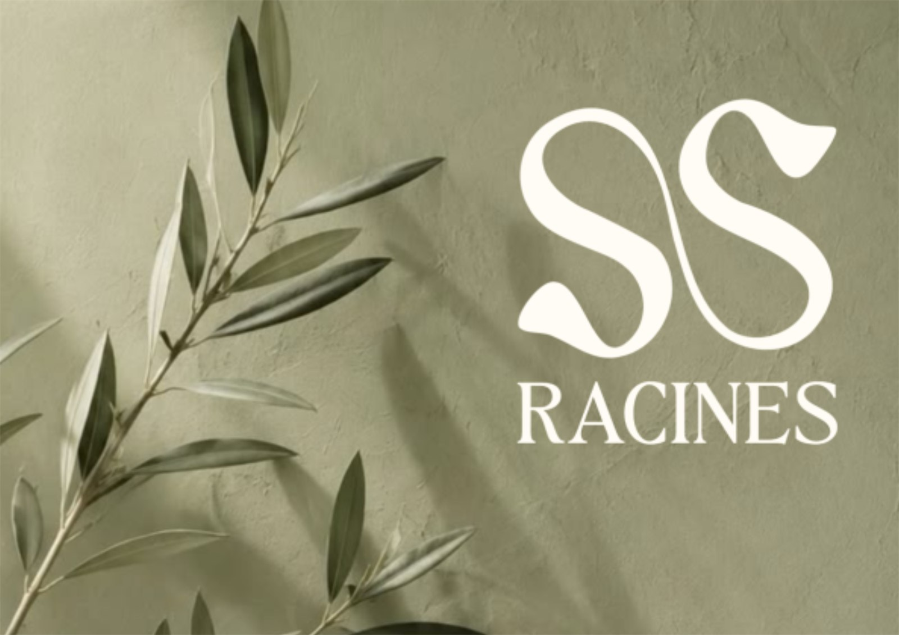